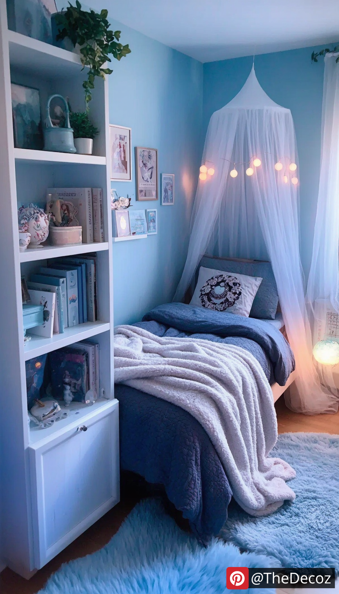
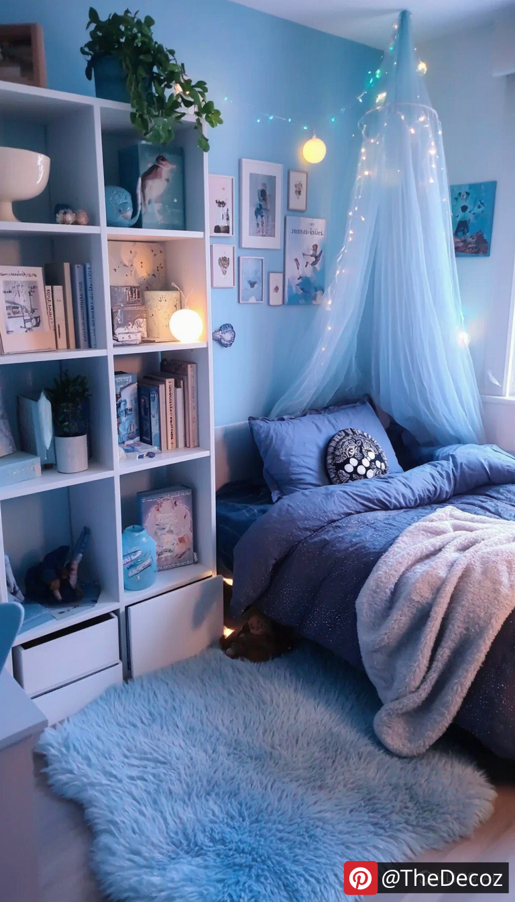

Creating a stylish and comfortable bedroom is essential for any teenager, especially for girls who want to express their personality and style. One of the most popular color choices for a teen girl's room is blue, a color that symbolizes calmness, creativity, and tranquility. In this article, we will explore innovative tips and room decor ideas that incorporate blue hues, helping you design a space that reflects individuality and comfort.
When it comes to blue, the options are endless. From soft pastels to bold navy, the shade you choose can significantly impact the room's overall vibe. Here are a few popular shades to consider:
Sky Blue: This light and airy shade can make a room feel more spacious and is perfect for a serene atmosphere.
Turquoise: A vibrant and energetic color, turquoise can add a fun and youthful touch to the decor.
Navy Blue: This deep, sophisticated hue can create a cozy and elegant environment, especially when paired with lighter accents.
An accent wall is a fantastic way to incorporate blue without overwhelming the space. Choose one wall to paint in a bold shade of blue while keeping the other walls neutral. This technique adds depth and interest to the room. You can also consider using blue wallpaper with fun patterns or textures to create a unique focal point.
Textiles play a crucial role in room decor. Incorporate various blue textiles to add layers and dimension to the space. Here are some ideas:
Bedding: Choose a comforter or duvet cover in a blue shade that complements your walls. Consider mixing patterns, such as floral or geometric designs, to add visual interest.
Curtains: Light, sheer curtains in a soft blue can allow natural light to filter through while maintaining privacy. For a bolder look, opt for darker, heavier drapes.
Throw Pillows and Blankets: Add throw pillows in different shades of blue, along with complementary colors like white or gray. A cozy blue throw blanket can also enhance the room's comfort.
Art and decor are essential for personalizing a space. Here are some ideas to incorporate blue into your artwork and decor:
Wall Art: Hang framed prints or canvases that feature blue tones. Consider abstract art, landscapes, or motivational quotes that resonate with the teen's personality.
Decorative Accessories: Use blue vases, picture frames, or decorative trays to add pops of color throughout the room. These small touches can tie the decor together and create a cohesive look.
When selecting furniture, consider pieces that complement the blue theme. Here are some suggestions:
Bed Frame: A white or light wood bed frame can create a beautiful contrast against blue walls. Alternatively, a navy upholstered headboard can make a bold statement.
Desk and Chair: If the teen needs a study area, choose a desk in a light color with blue accents. A blue desk chair can also add a fun touch to the workspace.
Storage Solutions: Opt for storage bins or shelves in blue or with blue patterns to keep the room organized while maintaining the color scheme.
Lighting can dramatically change the ambiance of a room. Consider these lighting options to enhance the blue decor:
Fairy Lights: String lights in warm white or blue can create a magical atmosphere, perfect for a teen's room.
Lamps: Choose table lamps with blue shades or bases to add functional yet stylish lighting. A floor lamp with a blue accent can also serve as a statement piece.
Finally, encourage the teen to add personal touches that reflect their interests and hobbies. This could include:
Photo Collages: Create a photo wall with pictures of friends, family, and memorable moments, framed in blue or white frames.
DIY Projects: Encourage creativity by incorporating DIY decor projects, such as painting a canvas or creating custom wall art.
Designing a bedroom for a teenage girl using blue color can be both fun and rewarding. By choosing the right shades, incorporating various textiles, and adding personal touches, you can create a space that is not only stylish but also a true reflection of her personality. Remember, the key to successful room decor is to balance aesthetics with comfort, ensuring that the bedroom remains a sanctuary for relaxation and creativity. With these tips and ideas, you can transform any room into a beautiful blue haven that a teen girl will love.
 